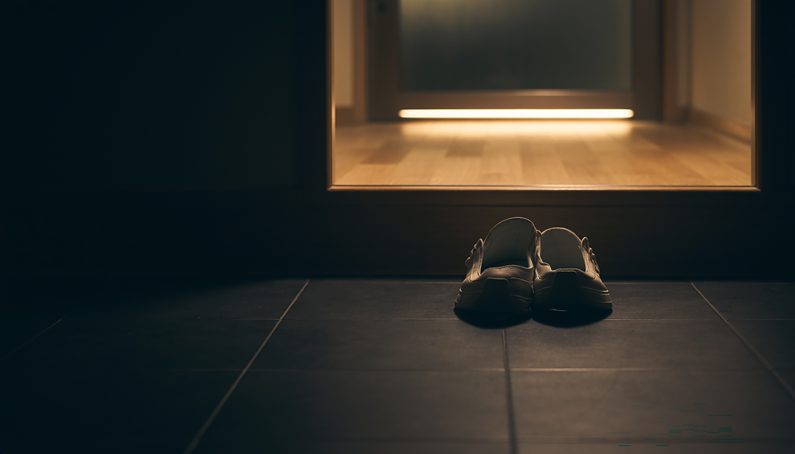
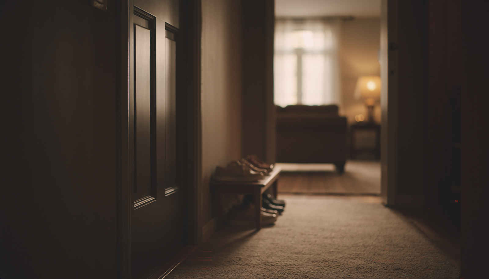
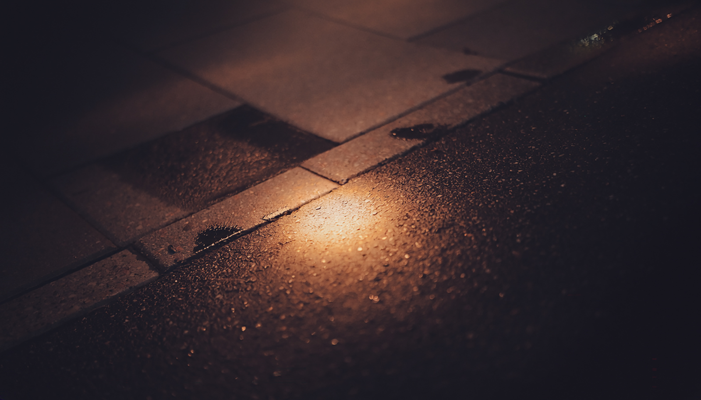
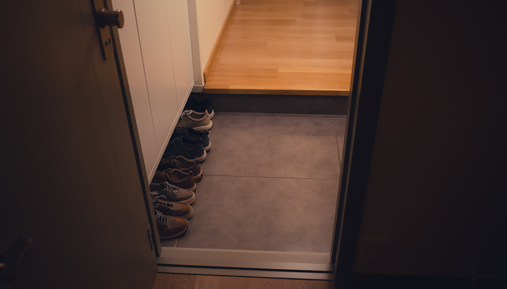
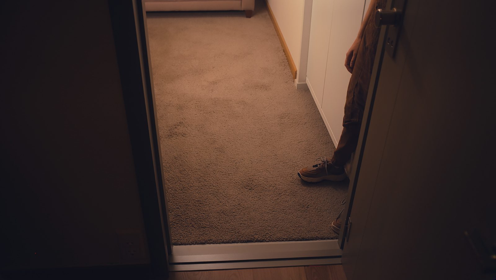
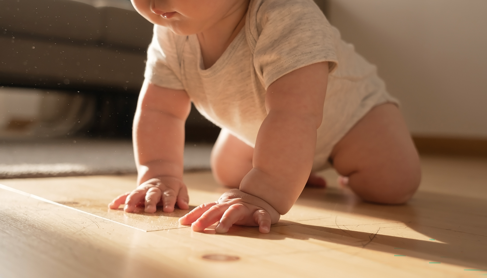
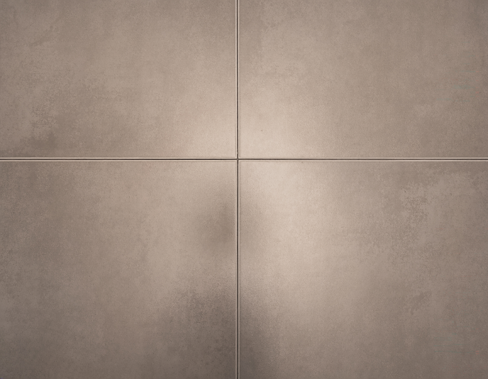

우리는 신발을 벗는다. 그런데,

우리는 원래
현관에서 신발을 벗는다.
그럼 우리 집은 안전할까.
1막
밑창이 하루 동안 밟는 곳

2막
밑창에 무엇이 붙어 있나
3막
신발을 신고 집에 들어가면
역 화장실 바닥의 세균이
거실 바닥까지 들어온다.
4막
신발이 멈추는 곳


눌러서 골라 보세요 0 / 5
5막
앉고 눕고 기는 곳

6막
오늘 저녁 할 일

우리는 신발을 벗는다. 그리고,
현관을 닦는다